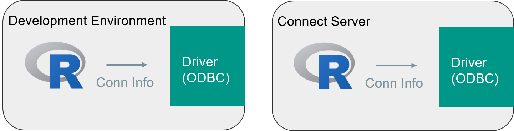
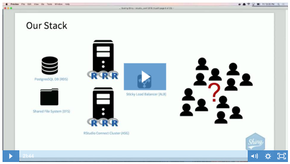

5.1 Deploying Shiny Apps
In this session:
- Deploy a shiny app that connects to a database
- Understand considerations for connecting to data from a Shiny app
- Learn how to scale a Shiny App
Accessing a database
Connecting to a database
Most R applications will access external data, often from databases.
All of the RStudio best practise recommendations for working with databases is summarized at http://db.rstudio.com/

Accessing Remote Data
Content on Connect accesses data via R.
This raises three primary concerns:
-
How to connect to data
-
How to secure data
-
How to deploy content that connects to data
Database connections
The database connection is defined in two files on your server:
| File | Location | Contains |
|---|---|---|
| odbc.ini | /etc/odbc.ini | Data Source Name (DSN) information, containing the connection options |
| odbcinst.ini | /etc/odbcinst.ini | Contains the driver options |
Inside the odbc files
- The
odbc.inidefines the connection string. Notice thedriverline:
sudo cat /etc/odbc.ini
[Postgres Dev]
driver = PostgreSQL
server = localhost
uid = ...
pwd = ...
port = 5432
database = postgres
- And observe how there is a matching
[PostgreSQL]entry in theodbcinst.inifile:
sudo cat /etc/odbcinst.ini
[PostgreSQL]
Driver = /opt/rstudio-drivers/postgresql/bin/lib/libpostgresqlodbc_sb64.so
The RStudio professional database drivers
RStudio provides a set of database drivers for use by customers with licenses for Pro products.
For more information:

Data security
Data security data at application level
Your first option (and most likely scenario) for securing data is at the Application Level
See db.rstudio.com, particulary the sections on deployment and managing credentials
Pros:
- cache data
- wide audience
Cons:
- responsibility on app developer

Data security data at data level
Your second option is to secure the data at the Data Level. This requires:
- PAM authentication, AND
- RunAs
LoggedInuser
Again, see db.rstudio.com, particulary deployment and managing credentials
Pros:
- Uses existing PAM access control list (ACL) and audit mechanisms
Cons:
- narrower audience OR higher overhead
- harder to scale

!!! note "Note: Customers often use kerberos in this scenario
Deploying
Consistency between dev and prod environments is critical!
However, identical environments are not necessary.
http://db.rstudio.com/best-practices/portable-code/

Scaling shiny apps
Scaling shiny apps
Now turn your attention to the second large topic: Scaling your Shiny apps.
Multiple users can connect to a single R process.

But R is single threaded...!
???
Overview of the utilization scheduler.
Demo on the instructor server where and how to change the settings for an app.
Video: Shiny app utilization scheduler
- Notice in this recording how the CPU indicator goes into the red very quickly, as each shiny connection puts a new demand on the database.
- However, even a 2 CPU machine can handle the 6 simultaneous connections, albeit with some delay to the user:
Scaling

The mental model for scaling shiny apps is a bit like chefs working in parallel in a kitchen.
Every chef can prepare an identical dish for a different customer, and the chefs don't interfere with one another.
In this model:
- Chef: R process
- Guests: Client Connections
- Meal: Shiny App
- Kitchen: Server
Multiple connections per R process in a Shiny app
How often does my code run?
- Global: once per R process
- UI: once per client connection
- Server: when client sends new inputs to the server
## Run once per R process
shared.data <- read.csv(...)
## Run once for every client connection
ui <- fluidPage(...)
## Run every time the client sends new input
server <- function(input, output){
output$plot <- renderPlot({
plot(input$num)
})
}
Support article: Scaling and Performance Tuning in RStudio Connect
???
Briefly discuss how multiple R users can even connect to 1 R process. How are things shared? When can there be contention? Shiny is stateful via the server's R session and the client (websocket communication) … different from other R code and other web frameworks BUT extremely powerful.
Tie in to databases: Mention the pool package and that the https://db.rstudio.com site has more info
Multiple R processes

Shiny runtime settings
RStudio Connect allows for multiple processes of a Shiny app, thus running multiple instances of the app in parallel.
The Connect admin guide explains these settings at:

Conf::2018 video: "Scaling Shiny"

-
Watch the video at Scaling Shiny – Sean Lopp for a demo of 10,000 simultaneous connections.
-
Get the shinyloadtest tools at github.
Your turn
Next complete the exercise.
Signs of success:
- You modified the runtime settings to run a Shiny app in parallel
- You have a better intuition of the how to tune the runtime settings for different load scenarios